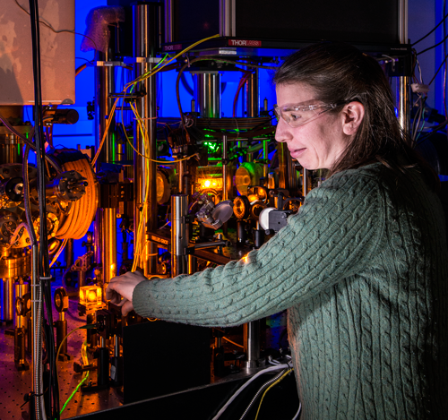

NOTE 07 · QUANTUM SENSOR
원자 간섭계 기반 관성항법
관성항법은 출발 위치에서 가속도와 회전을 계속 더해 현재 위치를 계산한다. 외부 신호가 없어도 된다는 장점이 있지만 작은 센서 오차도 시간과 함께 누적된다. 잠수함처럼 오랫동안 GPS를 받을 수 없는 플랫폼에는 이 드리프트가 큰 문제다.
원자 간섭계는 원자를 극저온으로 식힌 뒤 레이저 펄스로 물질파를 두 경로로 나누고 다시 합친다. 장치가 가속하거나 회전하면 두 경로에 쌓인 위상이 달라지고, 마지막 간섭무늬에 그 차이가 남는다. 원자의 성질은 동일하고 안정적이어서 장기적인 기준으로 쓸 가능성이 있다.

대표적인 구성에서는 세 번의 레이저 펄스가 빔 분할기와 거울 역할을 한다. 첫 펄스가 원자의 운동량 상태를 나누고, 두 번째 펄스가 두 경로를 되돌리며, 마지막 펄스가 경로를 다시 겹친다. 출력 상태의 원자 수를 측정하면 두 경로 사이 위상차를 계산할 수 있다. 가속도계와 자이로스코프는 펄스 방향과 간섭계 기하를 달리해 구현한다.
말만 들으면 당장 GPS를 대체할 것 같지만 현실은 아직 실험실 쪽에 가깝다. 정밀할수록 진동, 온도 변화, 자기장 같은 주변 환경에도 예민하다. 레이저와 진공 장치도 작고 튼튼하게 만들어야 한다. DARPA가 2025년 시작한 RoQS가 감도 기록보다 움직이는 헬리콥터에서의 견고함을 목표로 잡은 이유다.
원자 간섭계의 측정 주기는 일반적인 MEMS 관성센서보다 느릴 수 있다. 실용 시스템에서는 MEMS 센서가 빠른 움직임을 계속 추적하고 원자센서가 장기 오차를 주기적으로 보정하는 하이브리드 구성이 현실적이다. 원자 수, 냉각 시간, 레이저 위상 안정도와 진동 보상이 갱신율과 정밀도를 함께 결정한다.
실전 적용의 기준은 실험실에서 얻은 최소 잡음값만이 아니다. 크기·무게·전력, 시동 시간, 플랫폼 진동 중 동작 여부, 장기간 교정 안정성이 함께 검증돼야 한다. 현재 개발의 초점도 현장 환경에서 유지되는 정밀도로 이동하고 있다.